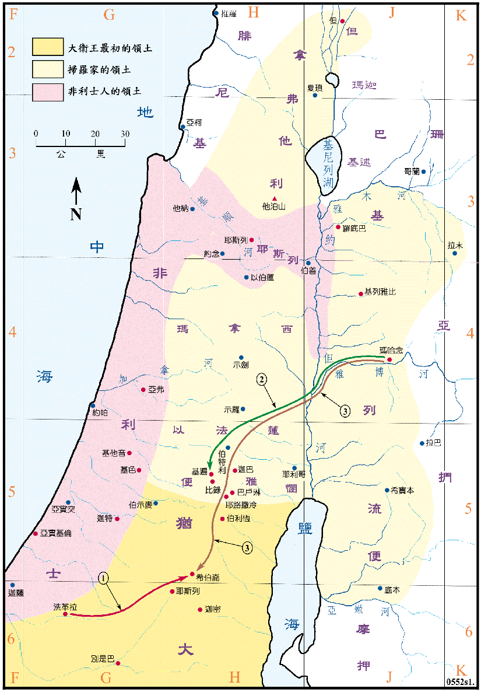

1010～1003BC

行动线说明
| 序号 | 圣经 | 说明 |
|---|---|---|
| 1 | 撒下2:1-4 | 大卫去希伯仑，犹大人在希伯仑膏大卫作犹大家的王。 |
| 撒下2:8-10 | 扫罗的儿子伊施波设在玛哈念作以色列王两年六个月，统治除了犹大地以外各支派已占有之地，其间犹大人和以色列人常有战争，但以色列渐衰。 | |
| 2 | 撒下2:12-31 | 伊施波设的元帅押尼珥，领人从玛哈念到基遍去，与犹大的勇士对阵，前者大败，死了三百六十人，但犹大人只死了十九人。 |
| 撒下3:12-39 | 押尼珥要归顺大卫，但在希伯仑被约押所杀，大卫为押尼珥哀悼。 | |
| 3 | 撒下4:5-12 | 伊施波设被他的两个军长利甲和巴拿所杀，又割下他的首级拿到希伯仑去献给大卫，但被大卫所杀。 |
| 撒下5:1-5 | 扫罗的儿子伊施波设被弑后，以色列人在希伯仑膏大卫作以色列人的王，以色列从别是巴到但再度统一。 |
扫罗死后，以色列人第一次分裂，大卫家只占有犹大山地，扫罗家则占有耶路撒冷到但以及河东之地，所以领土比大卫家大了很多。然而扫罗之后代无能，人民逐渐归向大卫，又在伊施波设王被弑之后，扫罗家也拥立大卫作他们的王，以色列得以再度统一。非利士人此时非常的强盛，除据有沿海平原之外，也占领了米吉多和伯善等重要的军事据点，对犹大仍是极大的威胁。